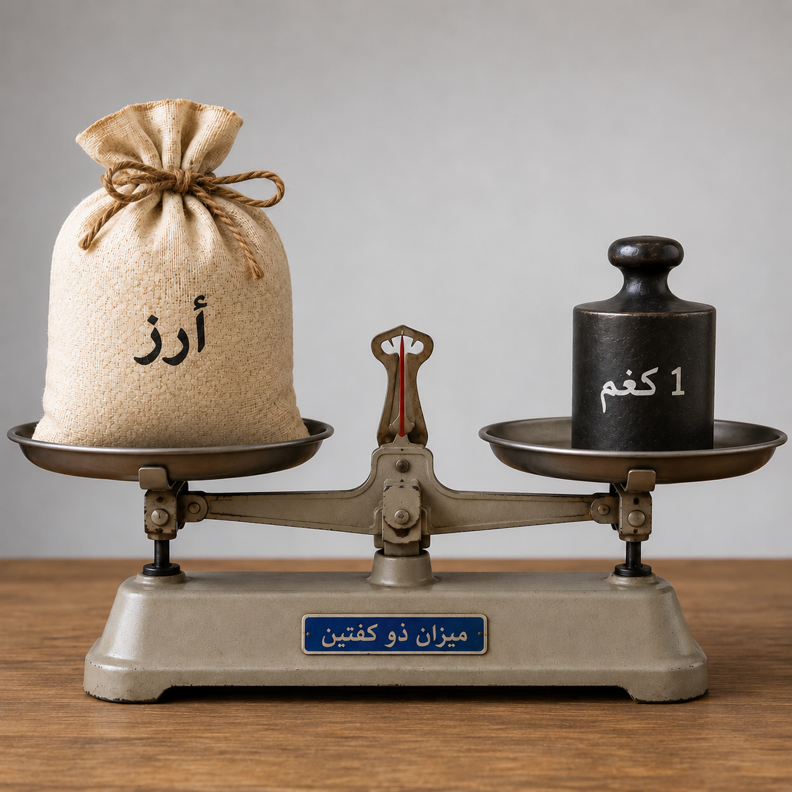
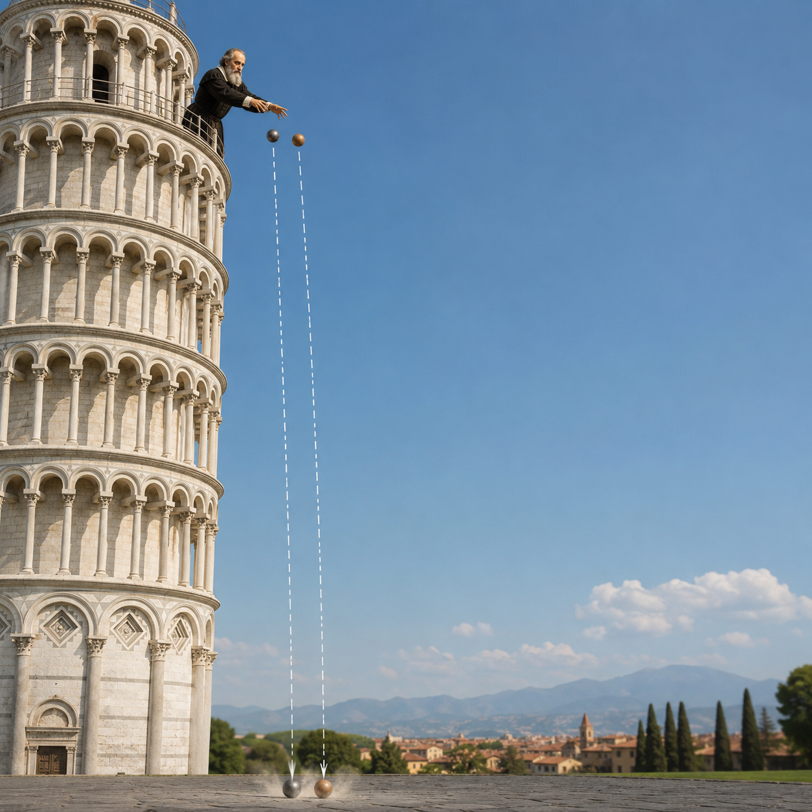

أنهينا مرحلة التعلم، سننتقل إلى التمرين الأول ونجيب عن
يجب الإجابة بشكل صحيح عن 4 أسئلة على الأقل.
قرأ ماهر ودعاء أن قوة الجاذبية على كوكب المشتري أقوى بـ 2.5 مرة تقريبًا من قوة الجاذبية على على الكرة الأرضية.
ماهر: "إذا وصلتُ إلى كوكب المشتري، ستصبح كتلتي أكبر بـ 2.5 مرة".
دعاء: "هذا غير صحيح. ستبقى كتلتك كما هي. ما سيزداد بـ 2.5 مرة هو وزنك".

قِسْتُم كتلة كيلوغرام واحد من الأرزّ باستخدام ميزان كفّتين وثِقَل كتلتُه 1 كغم.
توازنَ الميزان.
والآن أخذتم نفس الميزان، الأرزّ والثِقَل إلى القمر.
اختاروا لكل كلمة ما إذا كانت تمثّل لغة علمية، لغة يومية، أو كلتيهما معًا.
في درس العلوم، شاهد الطلاب والطالبات فيديو
نيل أرمسترونغ – أول إنسان مشى على القمر – وهو يقفز على القمر.
اختاروا لكل جملة ما إذا كانت مشاهدة أم تفسيرًا علميًا .
1969: نيل أرمسترونغ يهبط على القمر
عام 1589. غاليليو غاليلي، بروفسور شاب في جامعة بيزا،
قررَ تحدي فكرة كانت تُعتبَر حقيقة مطلقة حتى ذلك الحين.
ادّعى أرسطو أن الجسم الذي له كتلة كبيرة يسقط أسرع من الجسم الذي له كتلة صغيرة.
صدّقَ الجميع ذلك، ولم يُجهِد أحد نفسه للتحقق من الأمر.
قرّرَ غاليليو التحقق مما إذا كان ذلك صحيحًا.
صعد إلى برج بيزا، أمسك كُرتين، إحداهما من الحديد والأخرى من الخشب،
وأسقطهما معًا إلى الأرض.
النتيجة: وصلت كلتا الكُرتين إلى الأرض في نفس الوقت.
هل حدثت هذه التجربة فعلًا؟
المؤرخون غير متأكدين من ذلك.
المصدر الوحيد هو سيرة كتبها أحد طلاب غاليليو ونُشرت بعد نحو 75 عامًا
من وفاة غاليليو.
وربما كانت تجربة فكرية تحولت إلى أسطورة.
في عام 1971 اختبر رائد الفضاء ديفيد سكوت الفكرة من جديد على القمر.
وأسقط مطرقة وريشة في نفس الوقت (شاهدوا الفيديو).
النتيجة: على القمر أيضًا، لامس الجسمان الأرض في نفس الوقت.
